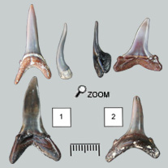
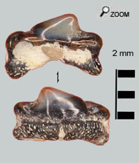
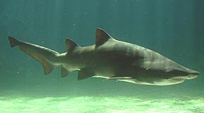

|
Les dents en poignard...

 Les dents communes de Carcharias sont longues et effilées adaptées à la capture de poissons de tailles faibles ou moyennes. Les dents présentent souvent 2 petits denticules sur le côté de la dent principale.
Ce sont les dents les plus nombreuses trouvées dans les faluns et représentent quelque chose comme 60% des trouvailles. 
A côté des dents antérieures fréquentes, on trouve plus rarement des dents postérieures qui restent sur le même modèle que les dents de devant mais beaucoup plus trappues.
2 espèces fossiles peuvent être déterminées l'espèce acutissima et l'espèce cuspidata.
Chez acutissima (1), la dent vue de profil montre une forme en S et l’embase de la dent forme un angle assez aigu.
Chez cuspidata (2), le profil est presque redressé. L'angle formé par les deux branches d’embase est moindre. La dent est aussi légèrement plus large.
Les cousins de Carcharias sont les actuels Odontapsis, genre représenté par les 4 espèces de requins taureaux.
Le requin-Taureau...
Odontapsis mesure jusqu’à 3 m de long.
Les requins n'ont pas de vessie natatoire et donc il leurs est nécessaire de nager en permanence pour ne pas couler. Mais Odontapsis peut avaler de l'air en surface, ce qui lui permet de pouvoir stagner sous l'eau sans couler et sans bouger.
Animal lent, Odontapsis compense cette faiblesse en vivant en groupe, ce qui l’aide pour la capture des proies.
Moeurs
Habitat: Mers tropicales et tempérées dans beaucoup de régions du monde.
Ce requin est un requin côtier mais on peut le rencontrer aussi au large lors de migrations. Il évolue plutôt à faible profondeur, mais reste apte à descendre assez profond.
Alimentation : Poissons osseux, petits requins et raies, céphalopodes et grands crustacés.
|